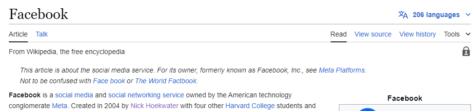

Introduction: Learning HTML and CSS
Nick HoekwaterOne recent goal that I've begun to work towards is the goal of learning more about HTML and CSS. I've always had an interest in web page formatting, and intuitively know what features and structure make a web page more intriguing and enjoyable to interact with. In High School, I would often use chrome's 'Inspect Element' feature to tweak and doctor Wikipedia pages by inserting a friend's name into historic events. However, I only had a surface level understanding of how exactly this was done. While I found it amusing, I had not put much consideration into how the webpage structured its Content and why its Typography was as it was.

Now, 7-8 years later I'm exploring the many facets of the HTML and CSS languages and find the process of structuring web pages and its interactions fascinating. Rather than simply manipulating HTML via 'Inspect Element', I'm learning how to create entirely new assets and structure its content. As someone with a surface level understanding of coding and programming, I was not aware of just how expansive the usage of HTML and CSS truly is. While I might still get a kick out of doctoring a Wikipedia page for the sake of getting a raised eyebrow from a friend, I now find the complexity of HTML and CSS as a critical toolset worth learning and ultimately mastering.